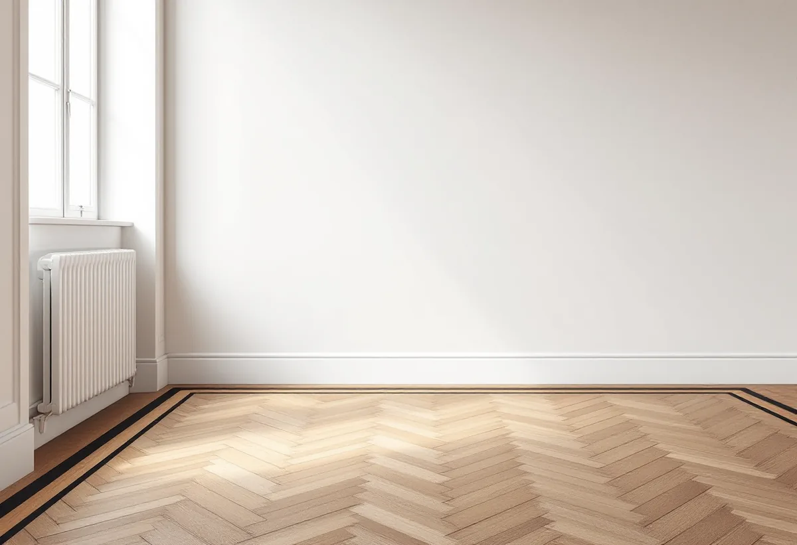

Platsbesök
Vi tittar på mönstret, tjockleken ovanför spåret och lösa stavar.
I en stor våning kan parketten vara det mest synliga i rummen, och ett mönsterlagt golv slipas inte som raka brädor. Valet av lack eller olja avgör sedan hur golvet ser ut och hur det ska skötas. Geal Entreprenad AB slipar och behandlar trägolv och lägger nya golv på Östermalm, och här beskriver vi hur vi tar oss an mönsterparkett.
Stockholms stad skriver i sitt underlag om riksintressen att stenstadens stora sammanhållna bebyggelse på Norrmalm och Östermalm till största delen uppfördes under 1800-talets senare del. Staden påpekar också att många byggnader i stenstaden har gul klass i Stadsmuseets klassificering, eftersom de har förändrats sedan de byggdes.
Många lägenheter är stora. I Hedvig Eleonora finns enligt områdesfakta för 2025 7 290 bostäder i flerbostadshus. Av dem har 1 119 fem rum eller fler och 915 fyra rum. Ett golv som går genom flera rum i en sådan våning blir en stor yta att slipa och behandla, och skarvarna mellan rummen syns.

Golvbranschen räknar kortstavsparkett, mosaikparkett och brädor av barr- och lövträ till de massiva trägolven. Sådana golv kan slipas om flera gånger, och gränsen sätts av tjockleken mellan ytan och not och spår. Riktlinjerna för slipning säger att rutmönster, fiskben och andra mönster där träet ligger åt olika håll normalt slipas först diagonalt och sedan i rummets längdriktning eller från det håll ljuset kommer.
Efter färdigslipningen får det inte finnas några slipränder kvar, vilket är extra viktigt om golvet ska pigmenteras. Slutresultatet ska motsvara slipning med bandmaskin och korn 120 för lövträ och korn 100 för barrträ. Golvet ska inte ytbehandlas när luftfuktigheten inomhus ligger utanför 30–60 procent eller när fuktkvoten i trät ligger utanför 6–10 procent.
Golvbranschens riktlinjer för lackering börjar med grundlacken, som tas fram för att förhindra sidlimning och missfärgning. I vardagsrummet används lack för medelslitage och i kök och hall lack för högt slitage, som stryks fyra gånger. På starkt sugande träslag som furu och bok ska en extra topplackning göras. Ett lackat golv kan möbleras tidigast efter 24 timmar, mattor bör vänta minst en vecka och starkt slitage minst två veckor.
Hårdvaxolja är en blandning av oljor och vaxer och kan läggas på ett nyslipat eller ett tidigare oljat golv. Under behandlingen ska rummet hålla cirka 20 °C och en relativ fuktighet på ungefär 50 procent, och en eventuell golvvärme ska vridas ner betydligt. Tumregeln är en plus en applicering, och den totala mängden ska inte överstiga 80 gram per kvadratmeter. Ska golvet pigmenteras vill Golvbranschen att ett prov görs på samma träslag och att du godkänner det innan hela golvet behandlas.
Bostadsrättslagen 7 kap. 7 § säger att en lägenhet som har särskilda historiska, kulturhistoriska eller konstnärliga värden alltid kräver styrelsens tillstånd för en åtgärd som påverkar ett sådant värde. Stockholms stad skriver att alla ändringar ska göras varsamt och att en särskilt värdefull byggnad inte får förvanskas.
Staden skriver också att det vid arbeten i särskilt värdefulla byggnader ibland behövs en antikvarisk förundersökning eller en certifierad sakkunnig inom kulturvärden. Ett mönsterlagt golv som slipas och behandlas på samma sätt som tidigare bevarar mönstret. Ska golvet bytas eller läggas om stämmer vi av med styrelsen först. Stadsmuseet svarar enligt staden oftast inom tre veckor på frågor om en byggnads värden. Mer om badrummet i en sådan lägenhet finns under badrumsrenovering på Östermalm.
Vi tittar på mönstret, tjockleken ovanför spåret och lösa stavar.
Du väljer mellan lack och hårdvaxolja, och vid pigment gör vi ett prov.
Lagning, slipning och behandling per rum redovisas var för sig.
Lösa stavar limmas och spikar tas bort före slipningen.
Diagonalt först, sedan i längdriktningen, och därefter lack eller olja.
Du får besked om när rummet kan möbleras och hur golvet sköts.
Att slipa och byta golv ger rotavdrag i en bostadsrätt. I en bostadsrätt gäller avdraget arbete inne i bostaden, alltså innanför väggar, tak och golv, och du ska ha underhållsansvaret för det enligt föreningens stadgar. Arbete i trapphus, entréer och andra gemensamma ytor ger inget avdrag.
Avdraget är 30 procent av arbetskostnaden, högst 50 000 kr per person och år och högst 75 000 kr tillsammans med rutavdrag. Material och resor ger inget avdrag. Vi drar av rotavdraget direkt på fakturan.
Golvytan, mönstret, antalet stavar som behöver lagas och vilken ytbehandling du väljer styr mest. Efter ett gratis platsbesök får du ett skriftligt kostnadsförslag.
Parkett, trägolv, klinker och slipning.
Golvläggning i Stockholm →Takbyte, takbesiktning och plåtarbeten.
Takläggare på Östermalm →Stenstad, Lärkstaden, Diplomatstaden och Gärdet.
Takrenovering på Östermalm →Kulturvärden, förvanskningsförbud och klassning.
Badrumsrenovering på Östermalm →Slå ihop två lägenheter.
Byggföretag på Östermalm →Husets ursprungliga kulör.
Fasadmålning på Östermalm →Gatufasad, gårdsfasad och lovfrågan.
Fasadrenovering på Östermalm →Stenstaden, Lärkstaden och villorna.
Fönsterbyte på Östermalm →Fönster och glas i Gärdets 1930-talshus.
Fönsterrenovering på Östermalm →Slipa om eller underhålla lackade golv.
Golvslipning på Östermalm →Stora lägenheter och kulturvärden.
Köksrenovering på Östermalm →Limfärg i taken, dekor och lov.
Målare på Östermalm →Taklandskapet och balkongerna.
Plåtslagare på Östermalm →Lagning av dörrar, paneler och fasta snickerier.
Snickare på Östermalm →Klassade våningar och bostadsrätt.
Tapetsering på Östermalm →